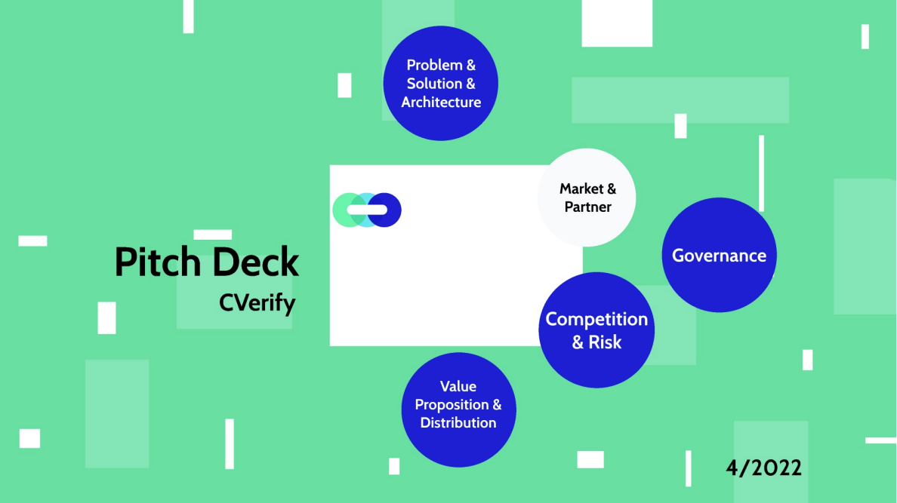
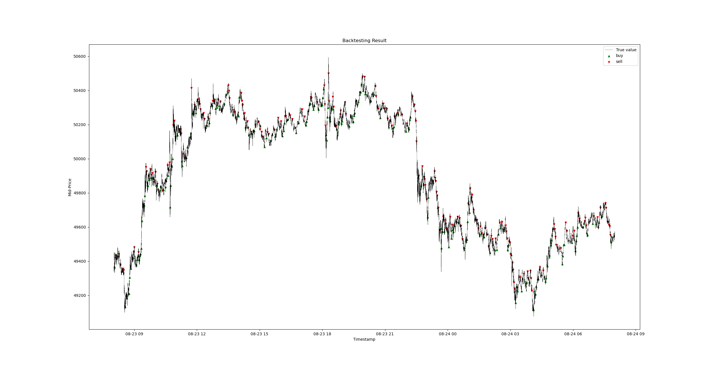
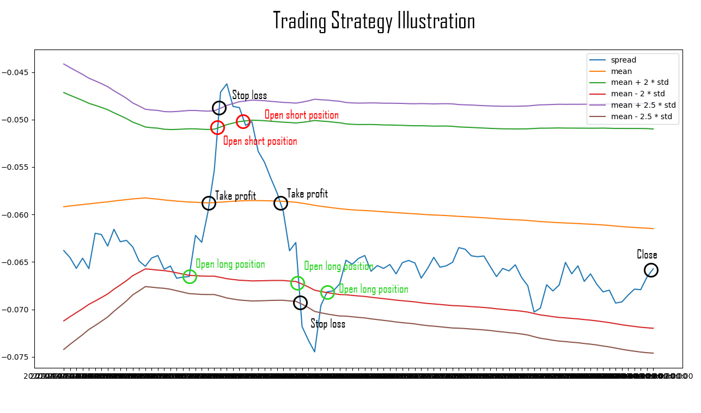
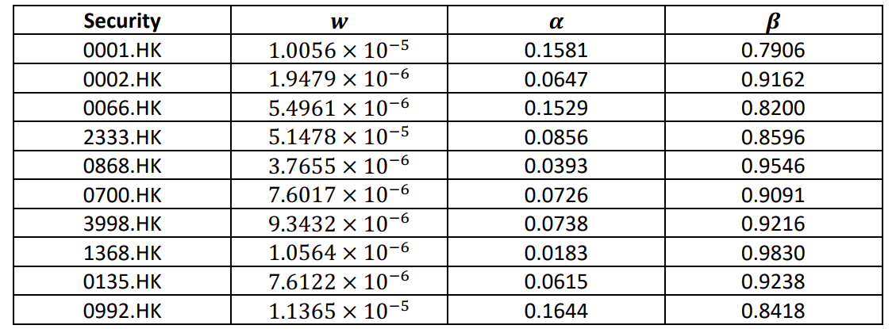
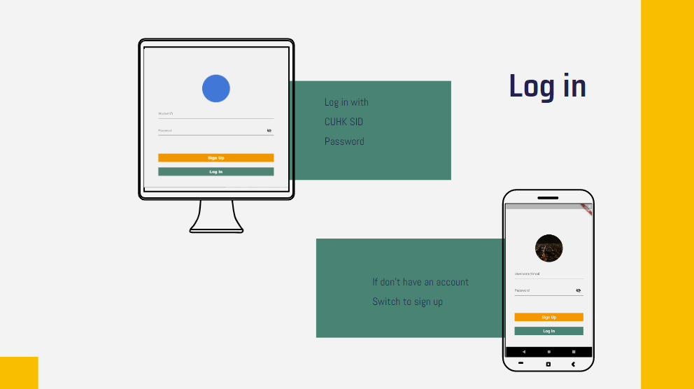
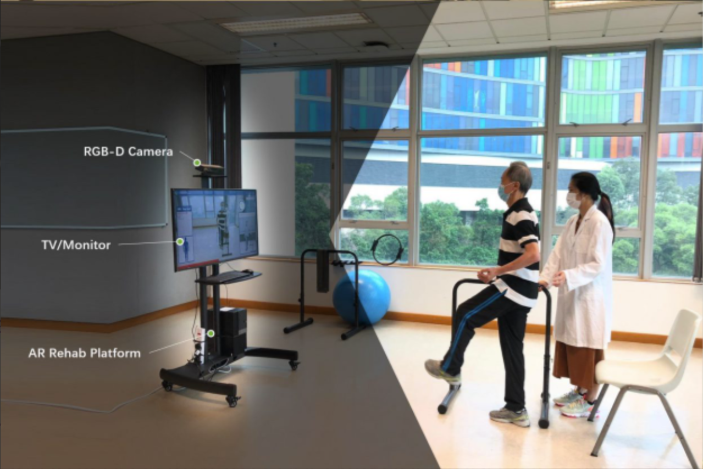

<!DOCTYPE HTML>
<html>
	<head>
		<title>Caroline LI Homepage</title>
		<meta charset="utf-8" />
		<meta name="viewport" content="width=device-width, initial-scale=1, user-scalable=no" />
		<link rel="stylesheet" href="assets/css/main.css" />
		<noscript><link rel="stylesheet" href="assets/css/noscript.css" /></noscript>
	</head>
	<body class="is-preload">

		<!-- Wrapper -->
			<div id="wrapper" class="fade-in">

				<!-- Intro -->
					<div id="intro">
						<h1>This is<br />
						Caroline LI</h1>
						<p>CUHK | 2017' Bachelor| Computer Science & Integrated Business Administration & Biochemistry</p>
						<ul class="actions">
							<li><a href="#header" class="button icon solid solo fa-arrow-down scrolly">Continue</a></li>
						</ul>
					</div>


				<!-- Nav -->
					<nav id="nav">
						<ul class="links">
							<li class="active"><a href="index.html">Academic & Career</a></li>
							<!-- <li><a href="tech.html">Tech & Interest</a></li> -->
							<li><a href="timeline.html">Timeline</a></li>
						</ul>
						<ul class="icons">
							<li><a href="https://github.com/LI-Jialu" class="icon brands fa-github"><span class="label">GitHub</span></a></li>
						</ul>
					</nav>

				<!-- Main -->
					<div id="main">

						<!-- Featured Post -->
							<article class="post featured">
								<header class="major">
									<!-- <h2><a href="resume.pdf">Resume</h2> -->
									<!-- <p> I got my two Bachelor degrees in  Computer Science and Financial Engineering, and a Minor degree in biochemistry in the CUHK. <br>
										With accumulating strong knowledge of probability and statistics (e.g., machine learning and time-series analysis) <br>
										my working interest is about Quant Research and Web3. 
										Including: <br>
										resarching and implementing trading models and signals in a live trading environment,<br>
										conducting research and statistical analysis to build and refine monetization systems for trading signals </p> -->
								</header>
								<ul class="actions special">
									<li><a href="documents/resume.pdf" class="button large">Full Resume</a></li>
								</ul>
							</article>

						<!-- Posts -->
							<section class="posts">
								<article>
									<header>
										<span class="date">May, 2022</span>
										<h2><a href="#">CVerify: <br />Blockchain CV Verification</a></h2>
									</header>
									<a href="#" class="image fit"></a>
									<p> This project won the Fintech Olympiad Best Corss Boarder Solution Prize. Our team constructed the right match in the labour market using the permission blockchain, especially choosing the Hyperledger Fabric from the Linux
										Foundation. You can view our GitHub repo <a href="https://github.com/LI-Jialu/CVerify">here</a>. <br> 
									</p>
									<ul class="actions special">
										<li><a href="documents/CVerify_whitepaper.pdf" class="button">Full Whitepaper</a></li>
									</ul>
								</article>
								<article>
									<header>
										<span class="date">April, 2022</span>
										<h2><a href="#">LCT: <br />LSTM Crypto Trading</a></h2>
									</header>
									<a href="#" class="image fit"></a>
									<p>This is my final year project under the supervision of <a href = "https://www.cse.cuhk.edu.hk/~taoyf/">Prof. TAO</a>, and got an A grade. 
										In this project we forecasted Bitcoin price trends by implementing multi-class SVM, LSTM and GRU on the order book data of BTC.
										Accomplished 70% prediction accuracy by training on 20 million historical data samples, selecting 9 efficient features and 3 different market situations. 
										Our strategy successfully achieved an annualized return of 12%. 
									</p>
									<ul class="actions special">
										<li><a href="documents/lct.pdf" class="button">Full Report</a></li>
									</ul>
								</article>
								<article>
									<header>
										<span class="date">December, 2021</span>
										<h2><a href="#">Corgi:<br />Crypto Currency Pairs Trading System</a></h2>
									</header>
									<a href="#" class="image fit"></a>
									<p>This is our group project of course "algorithm trading", and got an A grade.
										This project is focused on using statistical arbitrage strategy to employ price in-efficiency between mean-reverting portfolios with 2 or more components using crypto futures. 
										We are interested to test if using more components in a stationary portfolio will yield better trading profits. 
										We use Engle-Granger test to find cointegrated pairs select the top n pairs/portfolios based on p-value and half-life criteria. 

									<ul class="actions special">
										<li><a href="documents/corgi.pdf" class="button">Full Report</a></li>
									</ul>
								</article>
								<article>
									<header>
										<span class="date">April 14, 2020</span>
										<h2><a href="#"><br />Keep App Scrapy</a></h2>
									</header>
									<a href="#" class="image fit"></a>
									<p> KEEP is a famouse Fitness Mobile App in mainland China. 
										Scraped about 80 million public customer data from the app, and reached 100 requests per second to support data
										analysis using the Scrapy framework
										Increased the response and running speed of the database 5 times by database optimization, like matching the suitable
										database, changing buffer, adding indexes and implementing distributed databases
									<!-- <ul class="actions special">
										<li><a href="#" class="button">View Git</a></li>
									</ul> -->
								</article>
								<article>
									<header>
										<span class="date">December, 2021</span>
										<h2><a href="#">Normal-GARCH(1,1) model for stock returns
										</a></h2>
									</header>
									<a href="#" class="image fit"></a>
									<p>
										We study the behaviour of several stock returns and find that traditional 
										assumption that stock returns follow normal distribution does not hold well. 
										Therefore, Our group's solution is combining normal assumption and GARCH (1,1) 
										(Generalized Autoregressive Conditional Heteroskedasticity) to model the stock return. 
										GARCH (1,1) model can show great prediction power and model the presence of 
										heteroskedasticity well. We also include some advanced GARCH models in the end of the 
										report to improve our modelling process. 
										we propose normal-GARCH(1,1) model to better explain the stylised facts we discover like 
										volatility clustering, and the model does a very good job. 
										We then turn to use this model to predict future volatilities and future stock returns. 


									</p>
									<ul class="actions special">
										<li><a href="documents/garch.pdf" class="button">Full Report</a></li>
									</ul>
								</article>

								<article>
									<header>
										<span class="date">October, 2020</span>
										<h2><a href="#">Treasure hunt<br />
										University Online <br />Second Hand Market</a></h2>
									</header>
									<a href="#" class="image fit"></a>
									<p>Our group developed an online second hand market for CUHK student using Flutter framework. 
										This mobile app includes a market place, in-app conversation and location sharing functions. </p>
									<ul class="actions special">
										<li><a href="https://github.com/LI-Jialu/CUHK_Treasure_Hunt" class="button">View Git</a></li>
									</ul>
								</article>

								<article>
									<header>
										<span class="date">April, 2020</span>
										<h2><a href="#">A brain-computer interface system<br />
											For stroke rehabilitation</a></h2>
									</header>
									<a href="#" class="image fit"></a>
									<p>I contributed to the development of a brain-computer interface system for stroke rehabilitation, utilizing neurofeedback techniques to improve patients' outcomes. 
									and designed and implemented a scoring system using the Dynamic Time Warping (DTW) algorithm to accurately measure 
										differences between patients' actions and target actions. 
									I also helped enhance the front-end of an augmented reality (AR) software application to improve usability for stroke patients.  </p>
									<!-- <ul class="actions special">
										<li><a href="https://github.com/LI-Jialu/CUHK_Treasure_Hunt" class="button">View Git</a></li>
									</ul> -->
								</article>

							</section>

						<!-- Footer -->
							<!-- <footer> -->
								<!-- <div class="pagination"> -->
									<!--<a href="#" class="previous">Prev</a>-->
									<!-- <a href="#" class="page active">1</a>
									<a href="#" class="page">2</a>
									<span class="extra">&hellip;</span>
									<a href="#" class="page">9</a>
									<a href="#" class="page">10</a>
									<a href="#" class="next">Next</a>
								</div> -->
							<!-- </footer> --> 

					</div>

				<!-- Copyright -->
					<div id="copyright">
						<ul><li>&copy; Caroline LI</li><li>Design: <a href="https://html5up.net">HTML5 UP</a></li></ul>
					</div>

			</div>

		<!-- Scripts -->
			<script src="assets/js/jquery.min.js"></script>
			<script src="assets/js/jquery.scrollex.min.js"></script>
			<script src="assets/js/jquery.scrolly.min.js"></script>
			<script src="assets/js/browser.min.js"></script>
			<script src="assets/js/breakpoints.min.js"></script>
			<script src="assets/js/util.js"></script>
			<script src="assets/js/main.js"></script>

	</body>
</html>